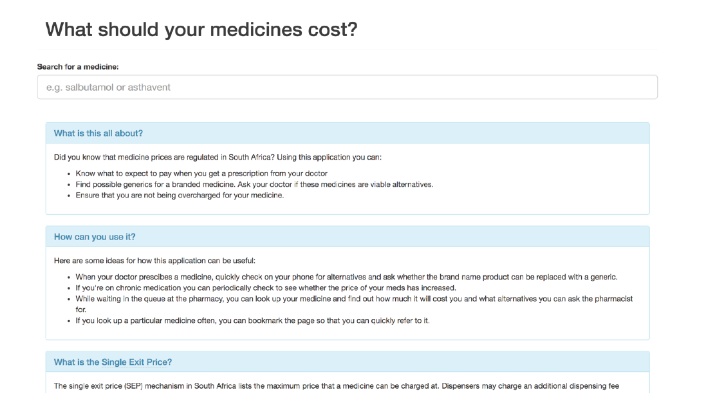
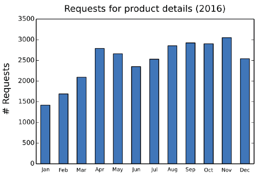
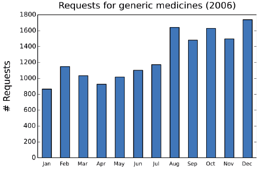

Open Data for Developing Economies Case Studies
South Africa: Code4SA
Cheaper Medicines for Consumers
by Francois van Schalkwyk, Andrew Young and Stefaan Verhulst
Impactcitizens
Sectorhealth
LocationSouth Africa
Summary
In 2014, Code for South Africa, a South Africa-based non-profit organization active in the open data space, took a little-known dataset from the national Department of Health website and created the Medicine Price Registry Application (MPRApp, https://mpr.code4sa.org/), an online tool that allows patients to compare medicine prices. MPRApp allows patients to compare the costs of doctor-prescribed medicines with those of other (e.g., generic) medicines containing the same ingredients. It also helps patients verify that they aren’t being overcharged by their pharmacies, and ensures cost-savings for both patients and society without compromising on efficacy. It was initially expected that middle- to upper-class patients with better online access would be the primary beneficiaries of MPRApp. However, there is evidence that doctors also use the information provided by MPRApp to save their patients money. Because MPRApp currently relies on the time and skills of its developer to ensure regular updates its continued use and impact remains uncertain unless sustainable funding can be secured. With no marketing or promotions to speak of, MPRApp has had an impact on the lives of a few South Africans; with a sustainable model and increased awareness of MPRApp, particularly among trusted intermediaries in the health sector, it could provide many more patients access to cheaper medicines.
Read MoreBackground
Problem Focus/Country Context

Healthcare in South Africa is provided by public hospitals and clinics, and by private hospitals and doctors. Private general practitioners (GPs), with surgeries across the country, are the first port of call for many middle-class South Africans seeking medical advice and who can afford private consultation fees that range from USD 20 to USD 50. For those who cannot afford private GPs, state medical facilities such as clinics and hospitals provide the only alternative. Many middle to upper class South Africans take out medical insurance (or “medical aid” as it is known in South Africa) to cover the cost of private hospitalization and/or day-to-day medical expenses.
Medical doctors prescribe medicines, and pharmacies dispense medicines. In the case of private doctors, the doctor will prescribe a specific medicine and the patient will purchase the medicine from a private pharmacy. The patient has access to a choice of medicines, and there are likely to be both branded and generic alternatives to medicine prescribed by a doctor. In some cases, if doctors are unfamiliar with the alternatives available for a particular medicine, they may leave it up to the pharmacist to provide the patient with an equivalent alternative (and may request this on the prescription note). However, the possibility of alternatives will depend on the availability of the medicine from the pharmaceutical company or distributor, and on whether the alternative medicines are stocked by the pharmacist. In the case of the public system, there is no or very limited choice available to the patient if the patient elects to obtain their medication from the dispensary at a public hospital. Public hospitals stock only those medicines made available to them through the public procurement system, and will typically only stock one brand for each type of medicine.
Medicine prices in South Africa are regulated by the government,3 and generic medicines that are cheaper than their brand-name equivalents are approved by the government to provide patients4 with access to more affordable alternatives.5 Moreover, legislation introduced in 2004 prohibits drug firms from giving customers in the private sector discounts or rebates; they are required to sell their products at what is known as the “single exit price” (SEP) to all buyers. The national government’s Department of Health is required by law to publish an annual notice of the maximum price hike allowed. In order to make medicine prices transparent, and in keeping with the Regulations Relating to a Transparent Pricing System for Medicines and Scheduled Substances,6 the Department of Health publishes a publicly-accessible SEP database on the Medicine Price Registry website (http://www.mpr.gov.za/).
Medicine Challenges
The problem in the regulated market for pharmaceuticals in South Africa is that doctors do not always prescribe generic medicines, and although pharmacists are obliged by law to offer private patients lower-priced generic medicines, this does not always happen.7 According to an article in Health24, a South African consumer health site, only 56 percent of patients in the South African private health sector use generic medicines while the global norm is closer to 80 percent.8 Price differentials between branded and generic medicines can be significant, and this affords private patients with greater opportunity to choose cheaper alternatives than those seeking care in the public sector. According to a study conducted by Bangalee and Suleman, of the 346 branded drugs in the study’s sample, the median cost differential was 50.4 percent; 75 percent of the generic drugs considered were more than 40 percent cheaper than the branded version.9 Although public patients encounter the biggest problems (since they are not given a choice of medicines), private patients also suffer from this price differential as they lack access to information allowing them to identify and purchase more affordable alternative to those prescribed.
As noted in the text box, medicine price data is actually published by the Department of Health (DoH) and available online. However, the information is difficult to find, and requires technical skills and some expert knowledge to use.10
Key Actors
Key Data Providers
The South African national government, through its Department of Health (DoH), has regulated medicine prices for the past decade, and is required by law to make medicine pricing transparent. The DoH does so by publishing medicine price data on its Medicine Price Registry site. The DoH is therefore the primary supplier of medicine price data. Mention should also be made of the Minister of Health, Aaron Motsoaledi, who has championed affordable medicines and has gone so far as to clash with multinational pharmaceutical companies operating in South Africa in his efforts to improve access to medicines through the use of affordable generics.11
The primary sources for the data are the privately owned and licensed pharmaceutical companies, which are required by law to submit their medicine prices on an annual basis to the DoH.
Key Data Users and Intermediaries
The central actor in the reuse of open government data is Code for South Africa (Code4SA, http://code4sa.org). Code4SA is a non-profit organization based in Cape Town, South Africa. Code4SA works with governments (national, regional and metropolitan), civil society organizations, the media and the tech community to promote the release, use and impact of open government data in South Africa. Adi Eyal, Director of Code4SA, was the prime driver behind the development of the MRPApp.
Other data intermediaries include private doctors who may rely on the MRPApp to advise private patients on alternative and potentially better priced medicines. Additionally, privately owned pharmacies act as both data users and intermediaries, as they may wish to familiarize themselves with the generic equivalents of prescribed branded medicines in order to provide the generic alternatives that they are legally obliged to offer patients. It is also conceivable that journalists, civil society organizations or consumer watchdog organizations may be interested in using the MRPApp to keep tabs on medicine prices and to call government to account if discrepancies appear in the prices listed online and those actually made available to patients.
Private companies that offer free medical advice services (such as websites), may also embed the MRPApp as a useful tool to attract patients to their services. Similarly, private medical aid providers may incorporate the MRPApp as a value added service into their product offerings.
Key Beneficiaries
Patients in the South African private healthcare sector are the primary beneficiaries of the available information on medicine prices. They are able to alter their decisions on which medicines to purchase based on the information provided by MRPApp. Such price-sensitive decisions may also lead to general efficiencies in the healthcare sector, which would benefit the South African economy as a whole.
Project Description
Initiation of the open data activity
In 2014, Adi Eyal, the director of Code for South Africa, one of Africa’s largest data journalism and civic technology initiatives, began wondering if there was a better way to make the information on medicine prices in South Africa available. He believed that if the information on medicine prices was more accessible and easier to understand, it could save private patients money. He soon realized that he could develop a simple application using a little known dataset from the Department of Health website that would help solve the problem confronting him and millions of South African patients. The dataset was the Medicine Price Registry (described further below) and it contained the single price exit data—the government-regulated price of all available medicines in the South African private health sector. Eyal’s goal was to use this dataset to present information to patients in an easy-to-use format that would allow them to identify and request equivalent generics, and to make sure they weren’t being overcharged by their pharmacies.
Eyal himself takes a number of medications for his own chronic conditions. In a blog post, he describes how the application he developed has benefited him personally, and how a search for a personal, individual solution led to a potential solution for society at large:
"Here’s a real life example of how this app has benefited me. I take chronic medication A and B. The branded version of A costs R741.27 and B costs R947.78. A generic of A is available at R420.22. Not only that but my medical aid pay for it in full whereas they only cover around R420.00 for the branded medicine. I only learnt about this by using the app."12
Demand and supply of data type(s) and sources
The primary data source used for the Medicine Price Registry application (MPRApp, https://mpr.code4sa.org/) is the database on medicine prices (the Medicine Price Registry), published by the national Department of Health of the Government of South Africa. The database contains prices, product details (e.g. schedule and form), ingredients and available dosages of all government-approved medicines in South Africa. The database is published annually following the publication of single exit price for medicines as required by law. Occasional updates are made by the department during the course of the year to correct errors or make unforeseen adjustments. An RSS feed is available to notify interested parties of updates and changes made to the database. The database is also available for download in Microsoft Excel format from the Medicine Price Registry website.

Figure 1: MPRApp Main Page
Although the data contained on the site is in theory “open,” users have to jump through a number of hoops to use it. Here are some of the steps a typical user would have to take in order to compare medicine prices:13
Know about and locate the Medicine Price Registry website.
Locate the page http://www.mpr.gov.za/PublishedDocuments.aspx#DocCatId=21 from the landing page by clicking on “SEP Databases” in the “Frequently Used Links” menu.
Download the latest single exit price database, a 40 megabyte Microsoft Excel spreadsheet.
Open a large spreadsheet which contains the 14,728 rows of medicines and 22 columns of descriptive data for each medicine listed.
Search for the relevant medicine.
To find generics, search by ingredient and discard all those alternatives that have a different strength (e.g. 200mg or 400mg) and dosage form (e.g. tablet or suspension).
To calculate the over the counter price, add the pharmacist dispensing fees (not provided in the spreadsheet) to the single exit price (provided in the spreadsheet).14
Needless to say, this process is complex, cumbersome and well beyond the abilities of most patients. Code4SA’s innovation was to simplify the process for the end user to determine the cheapest alternative to a prescribed medicine.
Code4SA’s application consists of a single page providing some contextual and instructional information, and a search bar allowing users to search for specific medicines or active ingredients. The results returned contain matching products and/or ingredients. An icon is also displayed, indicating the medicine form (tablet, suspension, etc.). For each matching product, the following information is provided: maximum price, schedule, dosage form, tablets/ml/doses, number of packs, generic/innovator, and a list of active ingredients (name and amount). Users are able to click on a link labelled “Find Generics” for each result.
The application data is updated on an asynchronous basis. The process involves the director of Code4SA downloading any data updates, cleaning the data and importing the updated and cleaned data into the application database.15
No external funding was available for this open data initiative, nor is there any intention to generate any income from the MPRApp in order to cover its development or operation. The development of the application was primarily made possible by non-material inputs—in particular, the developers’ entrepreneurial spirit, time, energy, and technical skills. Code4SA’s existing organizational infrastructure to house and support the application also contributed to its development.
Initially, the developers of the MPRApp anticipated that it would be used primarily by patients, and possibly to a limited extent by other developers who might feed the data into other personal health applications or platforms.16 Neither Eyal nor Code4SA did much to promote or market the application, and initial uptake and monitoring appeared to be slow, as evidenced by the fact that the developers were unaware that the website hosting the application went down in mid-2014.17 As it turned out, the unavailability of the application unintentionally provided evidence of the application’s use. This evidence took the form of an email sent to Code4SA, enquiring when the website would be back up, and indicating the application’s usefulness to the sender:
"It is with sadness that I not [sic] that your medicine price registry website is no longer working. The site was a powerful tool in my medical practice, it really helped me to work out treatments that my patients could afford. I’d like to know if the website will be coming back online anytime soon. Thank you very much for your efforts in general."18
Once the online application was restored, the sender followed up with this message:
"I work in a mixed-income neighbourhood and being able to figure out what works for my patients’ budgets is extremely helpful—there’s is no point in prescribing medicine that the patient cannot afford to buy. Please keep up the good work."19
The emails revealed an unexpected use case for MPRApp. While the application had been created primarily with patients in mind as end-users, and while the MPRApp’s creator himself was able to benefit from the application as a patient, in many cases it wasn’t patients who accessed the application directly, but rather medical practitioners. These practitioners served as trusted and expert intermediaries for patients, who were unable to understand and benefit from the information contained in the application without guidance. In fact, the situation was even somewhat more complex: it turned out that the medical practitioner who emailed Eyal had not discovered the application directly, but rather through one of his patients. All of this suggests not just the important role of intermediaries (e.g., physicians or pharmacists) in propagating and using such applications, but the symbiotic role intermediaries play with end-users (e.g., patients). Together, intermediaries and end-users are able to maximize the potential of open data.
Read MoreImpact
Impact is often difficult to measure, especially as many projects included in this series of case studies have been initiated relatively recently. The larger, systemic impact of open data can take many years to be evident, and in most countries is very much a work in progress. Nonetheless, a couple initial forms of impact from the MPRApp project can be identified.
Use Indicators
The above analysis relies heavily on blogs written by Eyal and on the email exchange between Eyal and the appreciative doctor as evidence of use. The reality is that many small-scale open data initiatives simply do not have the time or resources to evaluate the use and impact of their products. In fact, if the MPRApp website had not gone down, Code for South Africa might never even have known that their product was in fact being used.
Eyal confirmed the lack of resources to establish who is using the MPRApp and what they may be using it for. What he could provide were website analytics that show that approximately 2,000 unique visitors per month access the application. Most of these visitors are repeat visitors. In addition, Code for South Africa also receives regular requests for the application data to be updated when it is no longer in sync with the latest available government data. All of this suggests that the application is being used, and that users are deriving benefit from it. See Figures 2 and 3 for further web analytics for 2016 providing evidence of frequent and increasing use of the MPRApp to query the prices of medicines (Figure 2) and generic alternatives (Figure 3).

Figure 2: MPRApp Request for Product Details in 2016

Figure 3: MPRApp Requests for Generic Medicines in 2016
There is also evidence that the MPRApp API is being used by other intermediaries to access medicine price data in their efforts to reach and engage patients (see, for example, HEALTH-E News, a popular South African health news website).20
Changed Outcomes
The immediate problem being addressed is a lack of access to usable information on medicine prices, which results in private patients not being able to make informed purchasing decisions in relation to prescribed medicines. There are various ways to measure impact. Key indicators would be those that provide evidence of change directly attributable to the creation of the MPRApp. Measuring change at a macro level and ascribing a causal connection between the introduction of a new piece of technology and the change observed is, however, tenuous. Ascribing causal connections at the micro level is more feasible (though not without challenges). Evidence of impact at the micro level in this case could, for instance, take the form of private patients or other citizens changing their behavior in relation to the prescription and/or purchasing of medicines in South Africa.
Outcomes and impacts
Demonstrated Use
From the anecdotal evidence available, it is clear that the availability of new information on medicine pricing, extracted from open government data, has changed how certain patients make decisions (in this case, by proxy) related to the purchasing of medicines.
It is not possible to claim that patients are healthier, and even if additional evidence came to light that showed that a particular community or a group of patients linked to a doctor using the application are in fact healthier, it would still be problematic to draw a causal relationship between better decision-making and healthier citizens.
There is also evidence in the form of web analytics of the same people making repeated use of the MPRApp. While it is not possible to say with certainty what the value or benefits accrued from using MPRApp are, it can be said with some degree of certainty that repeated use and the need for up-to-date data are indicative of some form of positive impact being experienced by users.
It is acknowledged that impact is claimed based on an extremely limited number of cases and on shallow web analytics data. It is beyond the scope of this study to conduct a large-scale survey on the awareness, use and impact of the MPRApp. Interviews were conducted with two medical doctors who work in both the public and private sectors to get a better understanding of the medicines market and the prescriptions process. Both did, however, reveal that neither of them knew about the MPRApp although both confirmed its value for private patients. While a lack of numerous sources supporting claims of use and/or impact are frustrating, this should not be seen as overly limiting. Breadth of evidence is less of an issue than firm evidence. Moreover, assuming that a particular number of users is indicative of actual use or impact can be highly problematic. As is evidenced in this case study, a single intermediary user may be reaching tens or hundreds of beneficiaries who will not show up in usage analytics. This may be particularly relevant in environments where low technical skills or limited Internet access prevail.
Nevertheless, further research is clearly required to provide additional supportive evidence of the use and impact of MPRApp.
Read MoreRisks
As evidenced by the example of MPRApp and various other case studies included in this series, open data holds tremendous potential for positive transformation. But, as we also see throughout this series, open data also poses certain risks. It is important to understand these risks in order to ensure that open data projects are implemented in as safe a manner and in a way that maximizes the potential upsides and limits the downsides.
Two doctors were interviewed for this case study in order to assess the risks inherent in the MPRApp. They raised two broad issues. The first concerned the accuracy of the information contained within the application. One doctor suggested, for instance, that the MPRApp needs to make it clearer to users when alternative medications suggested in the search results do not in fact contain exactly the same active ingredients as the queried medication. For example, a search for “Sandoz Atenolol 50” (of which the only active ingredient is adenol) provides a list of 12 alternative medicines, two of which contain additional active ingredients (one contains hydrochlorothiazide while the other contains chlortalidone). Such imperfect matches pose several potential risks, including the possibility of adverse reactions or medical inefficacy. Similar examples were found when Code4SA conducted live testing of the application with doctors prior to its full-scale launch.
In addition, the doctors interviewed queried the comprehensiveness of the data provided. They stated, for instance, that they were aware of alternative (and sometimes cheaper) medicines that were not in fact listed in the MPRApp. The reasons for these gaps in information are unclear, but a number of factors could be at play: errors in the source data provided by the government, outdated data, or confusion introduced due to different procurement mechanisms across different aspects of the South African health sector. Regardless of the reasons, if the database does not correspond with existing knowledge and the actual availability of medications, it could result in less-than-optimal cost savings and, more generally, jeopardize the trust that doctors place in the application.
Read MoreLessons Learned
While impact, beyond anecdotal stories of use, remains difficult to define in the case of MPRApp, the project did surface some key lessons regarding enabling conditions and barriers for establishing succesful open data initiatives in developing economies.
Enablers
Policy and Legislative Framework
A key enabler for the MPRApp open data initiative was South Africa’s legislative framework that promotes and enacts transparency in medicine pricing. The existence of such a framework compels the Department of Health to collect and publish data on medicine prices in South Africa.
The right policy or legislative framework is not, however, on its own sufficient to enable an application such as this one.21 For example, government departments may collect data in compliance with existing laws, but fail to publish the data in a manner or format that enables access or reuse (despite such an approach being required in the policy framework). In this particular case, the department in question complies with the regulations and publishes timely, complete data on medicines pricing in machine-readable format, allowing a developer to repackage the data into useful information.
Committed and Skilled Technical Community
MPRapp also very much owes its existence to the presence of a skilled and committed developer, who was backed by a wider technical ecology. This personal and institutional commitment was especially important given the lack of available funding, which means that the application depended almost exclusively on personal drive and vision.
Trusted and Expert Intermediaries
As we have seen, MPRapp’s usefulness to patients was often mediated through the expertise and knowledge of doctors, pharmacists and other medical practitioners. Such trusted intermediaries often play a vital role in spreading the benefits of open data and, more generally, technology. They serve as vital go-betweens that allow the benefits of technology to manifest, and that ensure its potential is apparent and seized by even those average citizens who may lack the required technical skills to use applications and platforms on their own.
Barriers
Funding
Thersal theory of change on the impact o lack of funding posed a significant barrier in extending the impact of the MPRApp, even though it was apparent that doctors (and not only patients) were using the application. Shortage of funds for expansion and awareness building limited the uptake and possible impact of the MPRApp. According to Eyal, there was interest from government in taking over the management of the MPRApp but the apparent lack of capacity at the government level to do so means that the application’s sustainability remains at risk.
Limited Reach
Another barrier stems from the fact that the MPRApp has limited reach—it only benefits patients purchasing medicines from private pharmacies, while those in the public healthcare area are not similarly presented with alternative medicines to purchase. The divide between the private and the public health sector, both of which are regulated by government, is a barrier to the broader application, use and impact of the MPRApp to patients outside of the private health sector. More generally, since those in the private sector tend generally to be better off, the limited reach of the application—especially if it were to be used more broadly—could reinforce existing socio-economic inequalities and lead to an all-too-familiar digital divide.
Data Problems
The data published by the Department of Health is not interoperable, meaning that it cannot be easily combined with other data sources or processed with existing tools. This places limits on the usefulness of the MRPApp and could jeopardize the trust that users place in the application. Currently, the application data is updated only when the developer has time to do so or when persistent requests from users for updated data are received. Automatic updates of the application data made possible by the government data being interoperable would help mitigate this barrier.
Read MoreLooking Forward
The application is still active, and the director of Code4SA updates the data as and when time permits. These updates are often prompted by users of the MPRApp, and not conducted according to a regular schedule.
The flow of data and information from the government is likely to continue, but the sustainability of the application itself remains in question. There are at least two reasons for this: (1) the application relies on the infrastructure of an organization that itself depends on donor funding for its functioning; and (2) the application depends on the generosity of one individual—i.e., Adi Eyal —to allocate time and energy to the application and maintaining its data. However, according to Eyal, the Department of Health is supportive, and there has been some indication that it may be interested in taking over the management of the MPRApp. To date, this interest has not translated into concrete action.
The open data initiative is replicable in other countries, states or provinces where national or subnational governments make data on medicine pricing available, where there is differential pricing for similar medicines, and where patients have a choice in relation to the brand of medicine. Where government does not collect medicine price data, it is conceivable that data could be collected via crowdsourcing or perhaps even directly from pharmaceutical companies, although a clear incentive (most probably financial) would need to be in place to initiate and sustain data collection.
The open data initiative may also be replicable in other sectors when governments regulate the prices of commodities and consumables. There is not any direct evidence, however, that MPRApp has been replicated in any way to date.
Read MoreConclusion
The following points are worth making in terms of how this particular case study could inform a more universal theory of change on the impact of open data in developing countries:
-
It takes a combination of factors and conditions for an open data initiative to have impact. In this case, it was a cocktail of the following: a clear real-world problem; a curious and committed individual with technical skills and a social conscience; a relevant, regular and reliable open data source; an element of luck that allowed the application to be discovered despite no marketing efforts; and, last but not least, genuine usefulness to users who found value in the data (and, in this case, contacted the organizers when the application went down).
-
Relevant, regular and reliable open government data requires effort and resources. The existence of regulations mandating transparency are critical in ensuring that government departments publish open data. It should also be noted that regulations in the absence of compliance is an insufficient condition. What is required is the right regulatory framework combined with a culture of compliance (or tools to ensure compliance).
-
The ultimate beneficiaries of an open data initiative may not necessarily be the best target group in terms of marketing and promoting the use of the application. Trusted intermediaries who possess additional expertise and who have access to beneficiaries may be a better place to start. This is particularly true of data that may require a certain expertise to use and make sense of.
-
Not all open data projects require funding to be initiated. However, external funding does help in spreading the benefits of open data applications, and in particular making them sustainable and enabling them to grow over time.
References
Primary sources
Interview with Dr. J. Cunnigham, August 12, 2016. Cape Town.
Adi Eyal, “How Much Should You Be Paying for Your Medicines?” Code for South Africa, October 2013 http://code4sa.org/2013/10/15/comparing-medicine-prices.html.
Adi Eyal, “Open Data FTW!” Code for South Africa, April 2014, http://code4sa.org/2014/04/25/generic-medicines-ftw.html.
Adi Eyal, “Cheaper Medicines—An Unexpected Use, September 2014, Code for South Africa, http://code4sa.org/2014/09/22/cheaper-medicines-unexpected-user.html.
Interview with Adi Eyal, August 2, 2016. Codebridge, Cape Town.
Health-E News, “Medicines Price Registry,” https://www.health-e.org.za/medicine-price-registry/.
Email Interview with Dr. R. Henry, August 10, 2016.
Appendix
Appendix 1: Assessment of openness
Table 1. Evaluation of openness using the Exploring the Emerging Impacts of
Open Data in Developing Countries 10-point evaluation
|
ODDC OPEN DATA CRITERIA |
YES/NO |
|
Does the data exist? |
Y |
|
Is it available online in digital form? |
Y |
|
Is the data machine readable? |
Y |
|
Is the data available in bulk? |
Y |
|
Is the dataset available free of charge? |
Y |
|
Is the data openly licensed? |
N |
|
Is the dataset up-to-date? |
Y |
|
Is the publication of the dataset sustainable? |
Y |
|
Was it easy to find information on the dataset? |
Y |
|
Are linked data URIs provided? |
N |
|
TOTAL SCORE |
8 / 10 |
Table 2. Evaluation of openness using the 8 principles of Open Government Data
|
OPEN GOVERNMENT DATA CRITERIA |
YES/NO |
|
Data must be complete |
Y |
|
Data must be primary |
Y |
|
Data must be timely |
Y |
|
Data must be accessible |
Y |
|
Data must be machine processable |
Y |
|
Access must be non-discriminatory |
Y |
|
Data formats must be non-proprietary |
N |
|
Data must be license-free |
N |
|
TOTAL SCORE |
6 / 8 |
Appendix 2: Interviews with doctors
Questions sent:
I am doing a small research project with the Web Foundation and GovLab for USAID on the impact of open data in developing countries. I wonder whether you would have time to answer a few questions that would help me? Basically, I’d like to know:
(1) whether you have come across this website before? https://mpr.code4sa.org/
(2) whether this website would be of any value to you as a doctor, and
(3) what are the limitations or potential issues with the website (from a medical point of view)?
Appendix 3: Summary of case study characteristics
Region: Sub-Saharan Africa
Country/ies: South Africa
Income category: Upper middle income
Sector: Health
Data type: South African medicine price data
Data source: National government (Department of Health)
Link to data source: http://www.mpr.gov.za/PublishedDocuments.aspx#DocCatId=21
Degree of openness: 14 / 18 = 78%
Problem: Micro level: Lack of information resulting in patients not being able to make informed purchasing decisions in relation to medicines.
Macro level: Fewer citizens are able to afford the medicines they need to lead healthy lives.
Innovation/solution: Repackaging of government data as more easily understood information
Link to solution: https://mpr.code4sa.org/
Key actors: National government department / Director of tech/OD NGO / intermediaries (medical practitioners) / pharmacies / patients
Enablers: Regulative framework requires gov dept to collect and share data; data is relevant; committed individual; presence of trusted intermediary in the data chain
Barriers: Lack of resources to promote, scale or replicate
Initiation: Personal
Funding: None
Sustainable: Uncertain
Replicable: Yes, in specific contexts
Impact type: Solving public problems (Public service delivery)
Impact confidence: High but with limited examples
Reference
1 . Project conducted in collaboration with the Web Foundation, United States Agency for International Development (USAID), and the Mobile Solutions, Technical Assistance and Research (mSTAR) program at FHI 360.
2 Special thanks to Akash Kapur who provided crucial editorial support for this case study, and to the peer reviewers who provided input on a pre-published draft.
3 . The restructuring of the South African public health sector resulted in the development and implementation of the National Drug Policy in 1996. The primary objective of the Policy was to decrease the cost of medicines in both the private and public sectors. In 1997, the Medicines and Related Substances Control Amendment Act 90 was gazetted. It allowed government to reduce the cost of medicines.
4 . Patients in the public healthcare system access prescribed medication via hospital dispensaries. These dispensaries are stocked with publicly procured medicines. Patients do not have a choice as to which medicine they receive and they do not pay for the medicines as they are charged a single fee (determined by their income level) for both the consultation and the medicines prescribed.
5 . V. Bangalee and F. Suleman, “Has the Increase in the Availability of Generic Drugs Lowered the Price of Cardiovascular Drugs in South Africa? Health SA Gesondheid, 21, No. 1 (2016), pp. 60-66.
6 . Medicines and Related Substances Act, 1965, Department of Health, South Africa, 2004, http://www.hst.org.za/uploads/files/pricing_system_for_medicines.pdf.
7 . M. Deroukakis, “Mandatory Substitution Successful,” South African Medical Journal, 97, No. 1 (2007), pp. 63-64.
8 . Health24, “Cost of Medicine in South Africa Set to Skyrocket,” March 30, 2016, http://www.health24.com/Lifestyle/Health-and-your-money/News/the-high-cost-of-medicines-in-south-africa-20160323.
9 . Ibid.
10 . The issue of the prices of medicines in South Africa and their affordability relative to international prices is not addressed here partly because there is limited research available on the issue (see, for example, A. Makholwa, “Medicine Pricing: New prescriptions needed,” Financial Mail, January 30, 2014, http://www.financialmail.co.za/features/2014/01/30/medicine-pricing-new-prescriptions-needed.), partly because there is unevenness in the affordability of medicines across different medicines types in the South African market, and partly because the specific problem here is the lack of information available to support informed medicine purchasing decision-making.
11 . A. Makholwa, “Medicine Pricing: New prescriptions needed,” Financial Mail, January 30, 2014, http://www.financialmail.co.za/features/2014/01/30/medicine-pricing-new-prescriptions-needed.
12 . Adi Eyal, “Open data FTW!” Code for South Africa, April 2014, http://code4sa.org/2014/04/25/generic-medicines-ftw.html.
13 . These steps are based on the Medicine Price Registry website as of September 14, 2016, and on the Database of Medicine Prices of August 8, 2016.
14 . According to the Code for South Africa website, the Medicines and Related Substances Act allows for the following charges (excl. VAT):
- Where the SEP is less than R85.69, the maximum dispensing fee is R7.04 + 46% of the SEP.
- Where the SEP is less than R228.56, the maximum dispensing fee is R18.80 + 33% of the SEP.
- Where the SEP is less than R799.99, the maximum dispensing fee is R59.83 + 15% of the SEP.
- Where the SEP is greater than or equal to R799.99, the maximum dispensing fee is R140.00 + 5% of the SEP.
15 . At the time of writing, the last update of the MPRApp was on July 19, 2016 while the latest government data available was dated 8 August 2016.
16 . Adi Eyal, “How Much Should You Be Paying for Your Medicines?” Code for South Africa, October 2013 http://code4sa.org/2013/10/15/comparing-medicine-prices.html.
17 . Adi Eyal, “Open data FTW!” Code for South Africa, April 2014, http://code4sa.org/2014/04/25/generic-medicines-ftw.html.
18 . Adi Eyal, “Open data FTW!” Code for South Africa, April 2014, http://code4sa.org/2014/04/25/generic-medicines-ftw.html.
19 . Ibid.
20 . “[Updated] Health-e News, Code4SA launch new medicines pricing app,” Health-E News, March 2, 2015, https://www.health-e.org.za/2015/03/02/health-e-news-code4sa-launch-new-medicines-pricing-app/.
21 . See for example, F. Van Schalkwyk, M. Willmers and T. Schonwetter, “Embedding Open Data Practice: Developing indicators on the institutionalisation of open data practice in two South African countries,” UCT IP Unit, University of Cape Town, 2015, http://webfoundation.org/docs/2015/08/ODDC-2-Embedding-Open-Data-Practice-FINAL.pdf, on the disjuncture between policy and practice in the case of Kenya and South Africa